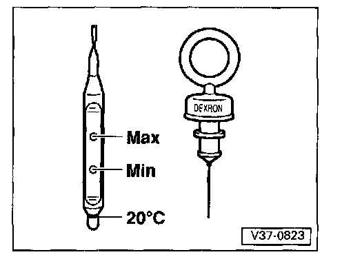

4 Speed 096 Transmission
ATF Level, Checking and Topping Up
ATF level, Checking
Checking conditions
- When checking ATF level the transmission must not be in emergency running mode.
- Vehicle parked on level surface, parking brake applied
- Selector lever at "P" and engine running at idle speed

- When cold, the ATF should extend up to the 20°C marking
- Bring ATF up to normal operating temperature, approx. 60°C (140°F)
Operating temperature is measured with VAG 1551 Scan Tool (ST), Reading measured value block. Again check ATF level and top up or extract as necessary.
It is essential that the ATF level is between the Min. and Max. markings.
CAUTION! Too much or too little ATF will affect the operation of the transmission. The ATF level must therefore be checked at regular intervals.
ATF, topping up
With engine running.
CAUTION!
- Too much ATF will cause transmission malfunctions and must therefore be extracted. This can be done with VAG 1358 A/1 and VAG 1358A probe, or EZ1 fluid evacuator.
- Only ATF with the designation Dexron may be used. Do not use any lubricant additives.
- Pour in ATF through a funnel. Approx. 3 liters (3.2 US qt.) at first for an initial filling.
- Then start engine and shift through all the selector lever positions with the vehicle stationary.
- Check ATF level.
- Use a non-fluffing cloth for wiping off the dipstick.
The ATF level changes with the temperature of the fluid. The Min. and Max. markings on the dipstick refer to the correct levels for an ATF temperature of 60°C (140°F).